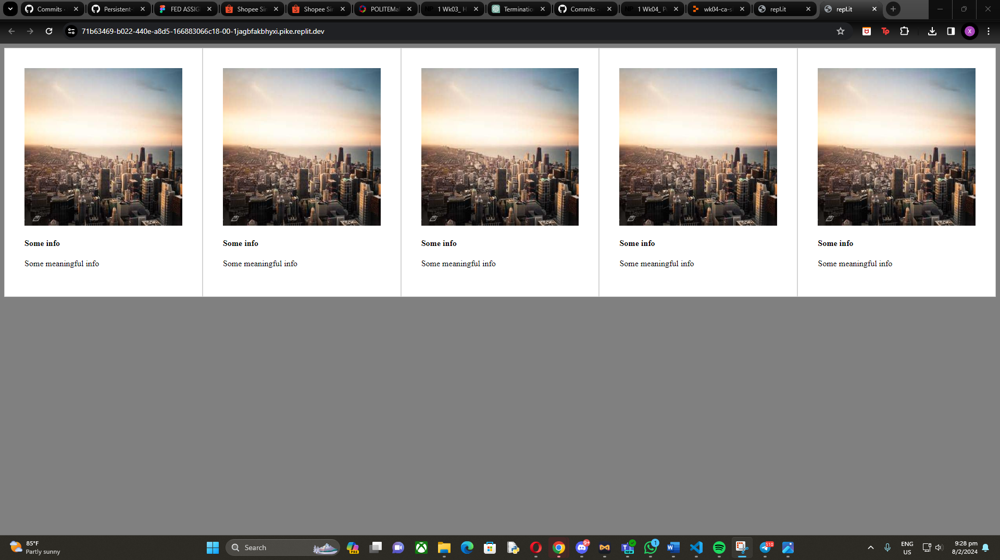

Week 4

- Explored Markdown syntax and its applications, utilizing resources such as Markdown cheat sheets and guides to enhance README.md files.
- Learned essential Git commands including git clone, git init, git add, git status, git commit, git log, git mv, git rm, git push, and git pull for managing repositories and version control.
- Gained insight into wireframing and the importance of creating a project wireframe as a preliminary step to visualize site flow, design hierarchy, and information organization.
- Received guidance on project planning and wireframe creation, with emphasis on clear communication of project ideas and goals, and initiating a Git repository for the assignment.
- Learned about Flexbox layout and its use in creating flexible and responsive layouts, providing more control over the alignment, direction, and order of elements within a container.
- Access to additional resources for further learning and inspiration, including tutorials on Git via command line, GitHub Pages, wireframing best practices, and repositories for icons and colors.
Snippets of what i've learned
Flexbox
